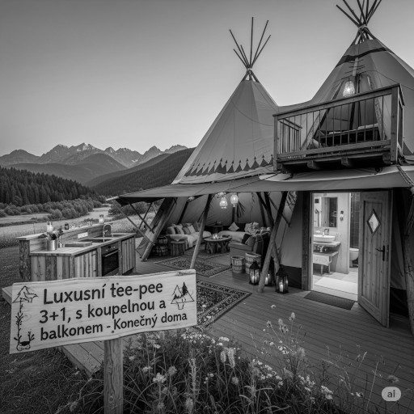

Jumanji: Návrat do říše snů
Eliška Vondrová přichází s nečekaně temnou a poetickou kapitolou dobrodružné ságy
Je to už několik let, co se digitální džungle Jumanji naposledy rozezněla hlasem bubnů. Tentokrát se ale neozývá z herní konzole, ani z deskovky zapomenuté na půdě. Země je vydává sama – tlumeně, hluboko, jako by ji někdo pomalu rozezníval zevnitř. Bubnování se šíří mezi stromy, v ozvěnách kanalizačních potrubí, dokonce i skrze kmeny na školním dvoře. Neptá se, neprosí – svolává. V novém snímku „Jumanji: Návrat do říše snů“ česká režisérka Eliška Vondrová přenáší diváky do světa, kde rostliny cítí, mravenci přemýšlejí a minulost není minulostí, ale živým organizmem.
Džungle čekala dlouho a bubny duní pro ty, kdo se už nevejdou do běžného dne. A tak se skupina dětí, která by se normálně nepotkala ani na školním hřišti, ocitá ve světě
Jumanji. Jako by se džungle sama rozhodla svolat shromáždění nejrůznějších věků a povah.
Vedle sebe tak kráčí batole s plyšovým medvídkem, ostýchavý sběratel brouků, dvojčata komunikující jen pohledem i dívka, která se nebojí ničeho, kromě vlastního stínu. Společně musí čelit nástrahám hlubokého deštného pralesa, kde čas běží pozpátku a stromům se zdají sny.
Vrchol filmu přichází ve scéně napadení tábora lidožravými mravenci velikosti dětské pěsti. Jejich organizace, precizní strategie a děsivý klid ve chvíli útoku působí, jako by se divák díval na dokument z apokalypsy přírody. Kamera dlouho zůstává bez hudby – slyšíme jen drcení listí, vrzání chitinu a tlumené výkřiky. Působivé. Děsivé. Nečekaně hluboké.
Přesto nejde o čistou akční jízdu. Vondrová pracuje s tématy ztráty, paměti a identity. A právě zde se objevuje prvek, který novinářům nedá spát – záhadná postava, kterou nikdo ve filmu fyzicky nevidí, ale všichni na ni reagují. Postava, jež nikdy nepromluví, a přesto ovlivňuje vše, co se ve světě Jumanji stane.

Na tiskové konferenci jsme se režisérky zeptali:
„Ve filmu se často mluví o Neviditelném poutníkovi, ale nakonec nebyl nikdy odhalen. Je pravda, že tuto roli ztvárnil váš manžel?“
Eliška Vondrová se na chvíli odmlčela, usmála se a řekla:
„Byl jako mech na kameni. Tichý, ale bez něj by se vše rozpadlo.“
Na další otázky už odmítla odpovídat a jen se tajemně usmívala.
Pevnostní areál Slavonice
Celým areálem vede naučná stezka o délce 2,5 km s 13 zastaveními, která návštěvníky provede historií opevňování Československa, lokálními zajímavostmi a taktickými detaily obranné linie na Slavonicku.
Každý rok se tu koná tradiční bojová ukázka „Přepadení řopíků 1938“, která přibližuje dramatické události z doby mobilizace. Scénky s historickou výzbrojí, uniformami, granáty a kulomety vytvářejí autentický zážitek pro návštěvníky.